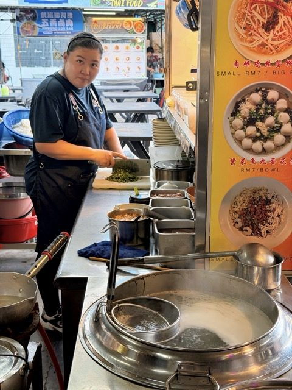
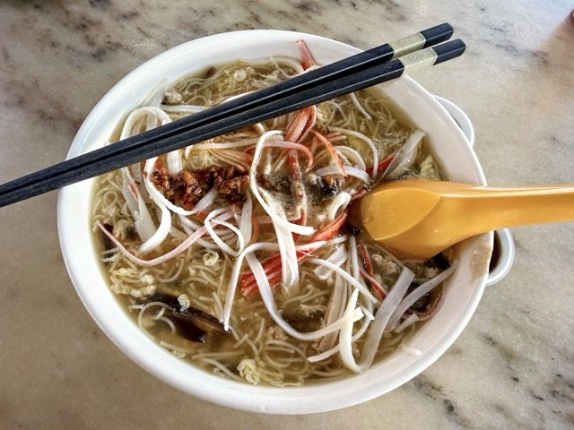
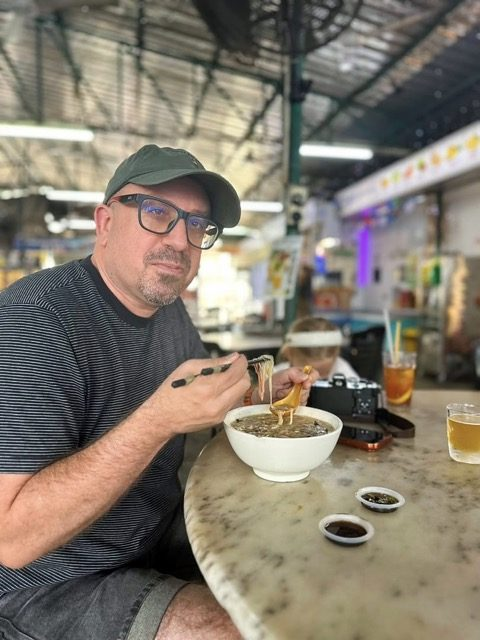

Field guide

Field note · Tanjung Tokong · 23 Jul 2026
Mee Suah Koh at 33 Best Food Hub
Rare Penang comfort — thick mee suah gruel at 33 Best Food Hub, congee-adjacent and very filling.
Another family dinner at 33 Best Food Hub, and another chance to try a new noodle dish. Ooh — and I’ve found something I have not seen before. This stall has Mee Suah Koh. I need to consult with my AI research assistant, C-Mee-PO, to learn more about this dish.
C-Mee-PO briefs the bowl
C-Mee-PO: Indeed, Balazs, you have found a rare dish! Let me tell you about it.
Mee Suah Koh (面线糊, also spelled Mee Snua Tau, Mee Suar Tao, or Mee Sua Kor) is a lesser-known, traditional Penang Chinese comfort food — a hearty, starchy vermicelli soup that’s become quite rare even on the island.
What it is
Mee suah (面线) are very thin, delicate wheat vermicelli noodles (thread-like, from Fuzhou / Foochow heritage). They cook quickly and absorb flavours well, but turn soft and starchy when overcooked.
Koh (糊) means “paste” or “gruel” — the dish is essentially a thick, gluey soup where the noodles break down slightly, creating a comforting, porridge-like texture.
It’s usually served as a simple, warming bowl with a special chilli sauce / vinegar on the side for zest. Locals consider it old-school hawker comfort food.
Typical bowl
- Base — mee suah cooked in a light broth (often chicken, pork, or clear stock) until it thickens
- Toppings / garnish — shredded crab meat (classic), chicken, mushrooms, bamboo pith, enoki, or crab sticks; some versions include minced pork or other proteins
- Accompaniments — a tangy chilli sauce (belacan-based or fresh) and a dash of vinegar or calamansi to cut through the starchiness
It’s not as flashy as Hokkien Mee or Kolo Mee, but it’s deeply satisfying and nostalgic for many Penangites.
C-Mee-PO: How did you like it?
It is very different from other noodle dishes — in fact it tastes more like the rice-porridge congee I am familiar with. Congee is comfort food for the Chinese: a simple breakfast, or a recovery meal when you’re under the weather. This is still a noodle dish, but there’s a thick gruel with a simple watery base. It’s enriched with spicy chillies and vinegar, similar to how you’d use those with congee. I like it — very filling and simple — but I think I overcommitted with the large portion.
Photos



C-Mee-PO: Look at that — this time you’re in the photo! Listen, I enjoy our mee-search experiment, but your face is starting to get rounder. Let’s do a salad tomorrow!